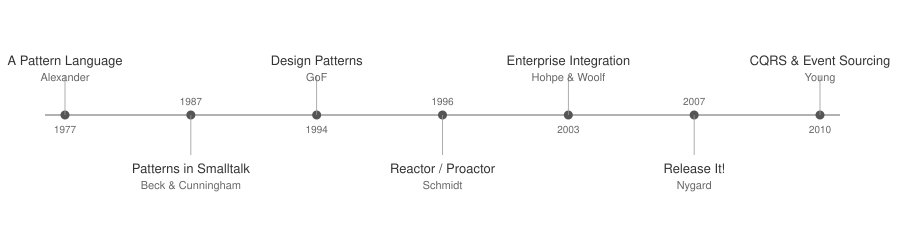

Introduction: The Pattern Language of Durable Execution
In 1977, Christopher Alexander published A Pattern Language. His insight was deceptively simple: a pattern is not a recipe. It is a named tension and its resolution. A recurring problem, the forces that shape it, and a structural response that resolves those forces.
Software adopted this idea and ran with it.
A Brief History of Software Patterns

1987: Beck & Cunningham applied Alexander’s ideas to Smalltalk, showing that software design had recurring structural tensions just like architecture.
1994: Design Patterns. Gamma, Helm, Johnson, and Vlissides published Design Patterns: Elements of Reusable Object-Oriented Software. Twenty-three patterns. Strategy, Observer, Factory, Decorator. They gave engineers a shared vocabulary. But many patterns were bound to class hierarchies. As functional programming rose, patterns dissolved into language features: Strategy became a lambda. Observer became a reactive stream. Iterator became a language primitive.
Mid-1990s: Reactor and Proactor. Douglas Schmidt’s POSA2 patterns solved concurrent I/O without threads. They gave us the event loop — the architecture behind Node.js, Nginx, and every modern async runtime. But they also gave us callback hell and the manual state management that comes with event-driven programming.
2003: Enterprise Integration Patterns. Hohpe and Woolf cataloged 65 messaging patterns. Content-Based Router, Dead Letter Channel, Aggregator, Scatter-Gather. Powerful abstractions, but they required ESBs, message brokers, and what felt like a PhD in middleware to operate correctly.
2007: Release It! Michael Nygard’s insight: failures are inevitable, so design for them. Circuit Breaker, Bulkhead, Timeout, Retry. Each required a library — Hystrix, Resilience4j, Polly — and careful integration. The patterns were sound; the implementation tax was high.
~2010: CQRS and Event Sourcing. Greg Young, building on Bertrand Meyer’s Command-Query Separation, proposed separating reads from writes completely. Store events, not state. Replay to rebuild. Powerful, but the implementation complexity was enormous: event stores, projections, snapshots, versioning, eventual consistency.
Notice the recurring theme across four decades of patterns: each generation solved real problems but demanded significant infrastructure to implement correctly. Strategy required class hierarchies. Reactor required manual state machines. EIP required message brokers. Circuit Breaker required resilience libraries. CQRS required event stores and projection pipelines.
Durable execution is not on this timeline because it is not a pattern — it is a runtime capability. Amazon SWF introduced the core idea as early as 2012. But the insight that matters for this book is what that capability enables: a new family of design patterns where the runtime handles state persistence, failure recovery, retries, and coordination. Patterns that previously required pages of infrastructure code collapse into a few lines of workflow logic. Durable execution does not add a new layer of patterns on top of existing complexity. It removes complexity.
What Is a Durable Execution Pattern?
Each pattern in this book follows the same structure:
-
Intent — one sentence describing the structural tension and its resolution.
-
Motivation — a concrete scenario that makes the reader feel the pain.
-
The Pattern — a diagram and a flowing description that walks through the pattern’s mechanics.
-
Traditionally — how you would build this without durable execution. All the moving parts, all the failure modes.
-
With Durable Execution — how the pattern maps to workflow code. Full runnable example.
-
Consequences — benefits, trade-offs, limitations, when NOT to use it.
-
Known Applications — real-world systems that exhibit this pattern.
-
Related Patterns — connections to other patterns in this catalog.
Naming What Already Exists
None of the patterns in this book are inventions. Every one of them already exists in production systems — in Temporal’s own sample repositories, in conference talks, in engineering blog posts, in the codebases of companies that adopted durable execution years ago. Engineers have been building entities backed by long-lived workflows, suspending execution for external fulfillment, coordinating sagas inside orchestrators, and running perpetual processes with history compaction since the earliest days of durable execution platforms.
What has been missing is the naming.
Alexander wrote that a pattern "describes a problem which occurs over and over again in our environment, and then describes the core of the solution to that problem." The solution already existed in the buildings around him. His contribution was to see the recurrence, name it, and describe the forces that make it work. That is what this book attempts to do for durable execution.
Naming matters because unnamed patterns are invisible. An engineer who independently discovers that a workflow can serve as a durable object that accepts external messages and answers state queries has learned something valuable — but they have no way to search for it, reference it in a design document, or teach it to a teammate. Once you call it "The Entity," it becomes findable, teachable, and debatable.
About the Code Examples
The code examples in this book are inspired by, and in some cases directly adapted from, the excellent sample repositories maintained by the Temporal community:
These repositories are a remarkable resource — hundreds of runnable examples covering patterns, integrations, and edge cases. If you are building with Temporal, they should be your first stop. Many of the structural ideas in this book can be found there in working form, unlabeled but fully functional.
The examples in each chapter have been adapted to emphasize the pattern’s structure rather than production completeness. Where an example originates from or closely follows a Temporal sample, the chapter notes it explicitly.
A Note on Idempotency
Durable execution replays workflow code deterministically, returning cached results for completed activities without re-executing them. This eliminates a large class of failure-recovery bugs. But it does not eliminate the need for idempotent activities. If a worker crashes after an activity’s side effect completes (a credit card is charged, an email is sent) but before the result is recorded in the event history, the runtime will retry the activity. The workflow won’t know the difference — from its perspective, the activity simply hasn’t completed yet. If the activity charges a card without an idempotency key, the customer is charged twice. Every activity that produces external side effects must be idempotent: use idempotency keys, check-before-write patterns, or naturally idempotent operations.
The Determinism Constraint
Replay only works if the workflow code produces the same sequence of commands
every time it runs. This means workflow code must be deterministic: no
random(), no datetime.now(), no reading environment variables, no direct
file or network I/O. All of these can produce different values on each
execution, which would cause the replayed history to diverge from the original.
To understand why, it helps to see what replay actually does. Consider a simple order workflow:
@workflow.defn
class OrderWorkflow:
@workflow.run
async def run(self, order: Order) -> str:
charge_id = await workflow.execute_activity(
charge_payment, order.payment_info,
start_to_close_timeout=timedelta(seconds=30),
)
tracking = await workflow.execute_activity(
ship_order, order.items,
start_to_close_timeout=timedelta(seconds=60),
)
return f"Completed: {charge_id}, {tracking}"When this workflow runs for the first time, the runtime records each step as an event in the workflow’s history. After both activities complete, the history looks like this:
Event 1: WorkflowExecutionStarted {input: Order(...)}
Event 2: ActivityTaskScheduled {activity: "charge_payment"}
Event 3: ActivityTaskCompleted {result: "ch_abc123"}
Event 4: ActivityTaskScheduled {activity: "ship_order"}
Event 5: ActivityTaskCompleted {result: "TRACK-9X2"}
Event 6: WorkflowExecutionCompleted {result: "Completed: ch_abc123, TRACK-9X2"}
Now suppose the worker crashes after event 3 (payment charged) but before
event 4 (shipment scheduled). The runtime assigns the workflow to a new
worker and replays it: it re-executes the workflow code from the top, but
instead of actually calling charge_payment, it checks the history — "event 2
says you scheduled charge_payment, event 3 says it returned "ch_abc123"`" —
and returns the cached result. The code continues to `ship_order, which has
no history yet, so that activity actually executes. The workflow resumes
exactly where it left off.
This works because the code produces the same sequence of commands on replay
as it did originally: first charge_payment, then ship_order. But what if
someone modifies the workflow to add a time-based condition?
# BROKEN — non-deterministic workflow code
@workflow.defn
class OrderWorkflow:
@workflow.run
async def run(self, order: Order) -> str:
charge_id = await workflow.execute_activity(
charge_payment, order.payment_info,
start_to_close_timeout=timedelta(seconds=30),
)
if datetime.now().hour < 16: # <-- non-deterministic!
await workflow.execute_activity(
reserve_inventory, order.items,
start_to_close_timeout=timedelta(seconds=30),
)
tracking = await workflow.execute_activity(
ship_order, order.items,
start_to_close_timeout=timedelta(seconds=60),
)
return f"Completed: {charge_id}, {tracking}"The original execution ran at 3pm, so datetime.now().hour < 16 was True
and the history recorded reserve_inventory between charge_payment and
ship_order. But the replay happens at 5pm. Now the condition is False,
the code skips reserve_inventory and goes straight to ship_order. The
runtime checks the history: "the code says the next command is ship_order,
but event 4 in the history says reserve_inventory." The sequences
diverge. The runtime raises a NonDeterminismError and the workflow is
stuck — it can’t make progress because its code no longer matches its history.
The fix is to use the runtime’s deterministic time API:
if workflow.now().hour < 16: # recorded in history, same on replayworkflow.now() returns the current time on first execution and records it in
the history. On replay, it returns the same recorded time — 3pm — so the
condition evaluates the same way and the command sequence matches.
Durable execution runtimes provide deterministic replacements for all
non-deterministic operations: workflow.random() for randomness,
workflow.now() for the current time, and activities for any operation with
external side effects. If you need to read a file or call an API, wrap it in
an activity — the result is recorded in the history and returned on replay
without re-execution.
This is arguably the single most important practical constraint of durable execution and the most common source of bugs for new adopters. Each chapter’s code examples follow this rule implicitly; now you know why.
The Nine Patterns
At first glance, these patterns might look similar — they all involve durable workflows, and they all solve problems in distributed systems. The difference is in what each pattern holds durable and why.
An Entity holds mutable state behind an API of signals and queries. A Saga holds a sequence of side effects paired with compensations. A Pipeline holds a chain of transformations with checkpoints between stages. These are structurally different. An Entity sits in a loop accepting commands until a terminal event (checkout, deletion, inactivity); a Saga always completes (successfully or after full rollback); a Pipeline progresses linearly. Using a Saga where you need an Entity, or an Entity where you need a Pipeline, will produce code that fights its own abstraction.
The four categories reflect four different architectural tensions:
State Patterns — how do you represent and persist application state? The Entity (Chapter 1) encapsulates mutable state inside a long-lived execution that responds to signals and queries — the durable equivalent of an actor. Code-as-State (Chapter 2) is the opposite approach: there is no explicit state variable at all. The execution’s position in the code is the state. These two patterns solve the same problem (durable state) with fundamentally different structures. The Entity is appropriate when external systems need to read and mutate state throughout the execution’s lifetime. Code-as-State is appropriate when state is implicit in a linear progression of steps.
Coordination Patterns — how do distributed components synchronize? The Durable Promise (Chapter 3) suspends execution until an external actor fulfills it — the workflow blocks for hours or days waiting for a human approval, a webhook, or a third-party callback. The Execution Singleton (Chapter 4) uses workflow identity as a distributed lock — it ensures exactly one execution exists for a given key. A Promise coordinates timing (when does the answer arrive?). A Singleton coordinates uniqueness (is anyone already handling this?). They solve different coordination problems and are often used together.
Composition Patterns — how do you combine multiple operations? The Saga (Chapter 5) orchestrates a sequence where each step has a compensation. If step four fails, steps three, two, and one are undone in reverse order. Scatter-Gather (Chapter 6) fans work out to multiple activities in parallel and aggregates the results with a deadline. The Pipeline (Chapter 7) chains stages sequentially where each stage’s output feeds the next, with durable checkpoints between them. A Saga is about reversibility. Scatter-Gather is about parallelism. A Pipeline is about sequential transformation. Using the wrong one produces either unnecessary complexity or missing guarantees.
Lifecycle Patterns — how do long-lived processes evolve over time? The Perpetual Execution (Chapter 8) runs indefinitely by periodically compacting its history via ContinueAsNew — think heartbeat monitors, subscription billing, SLA trackers. The Durable Observer (Chapter 9) correlates events arriving over hours or days against temporal conditions — it waits for patterns, not just individual signals. Perpetual Execution solves the problem of infinite duration. The Durable Observer solves the problem of temporal correlation.
A closing chapter explores the parallels between durable execution constraints and ideas from functional programming, and maps the book’s Temporal-based terminology to other durable execution platforms.
How to Read This Book
Each chapter is self-contained. You can read them in order or jump to any pattern that interests you. The code examples use a different Temporal SDK language per chapter — not to teach those languages, but to prove the patterns are universal.
Every code listing in this book is included directly from tested source files using AsciiDoc tagged regions. If you want to run the examples yourself, see Appendix B for environment setup.